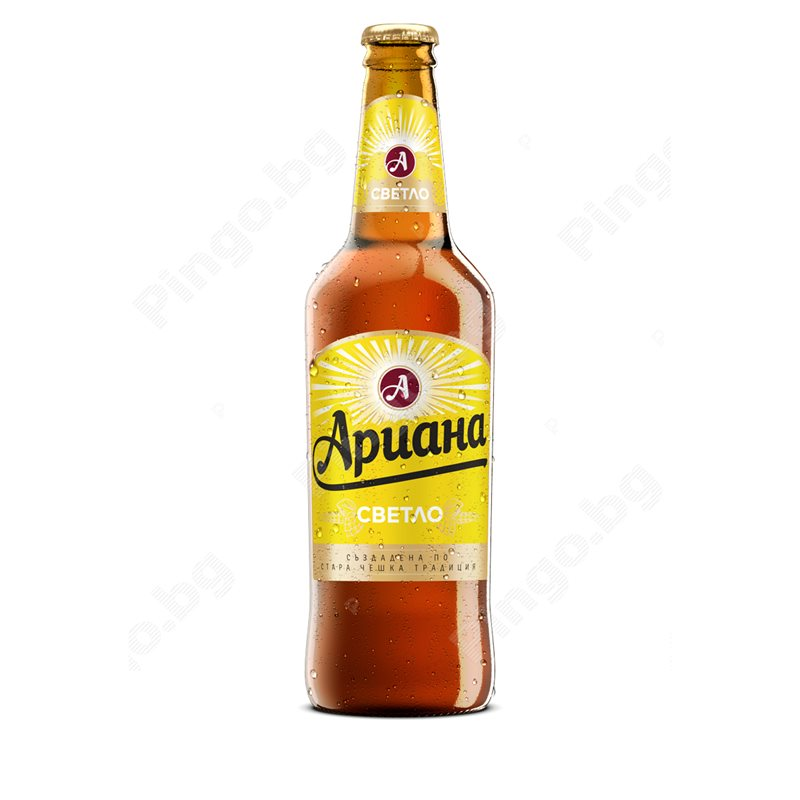
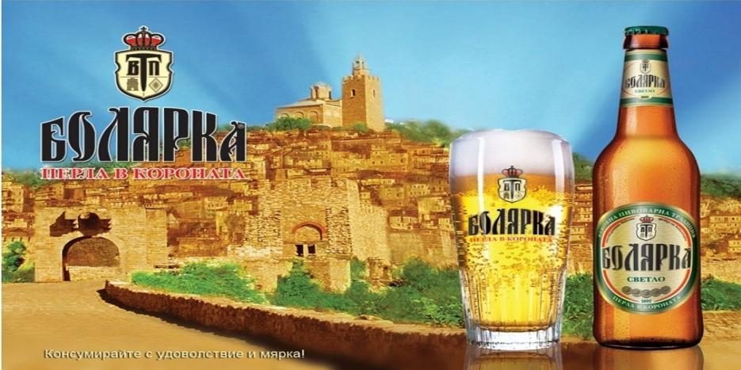
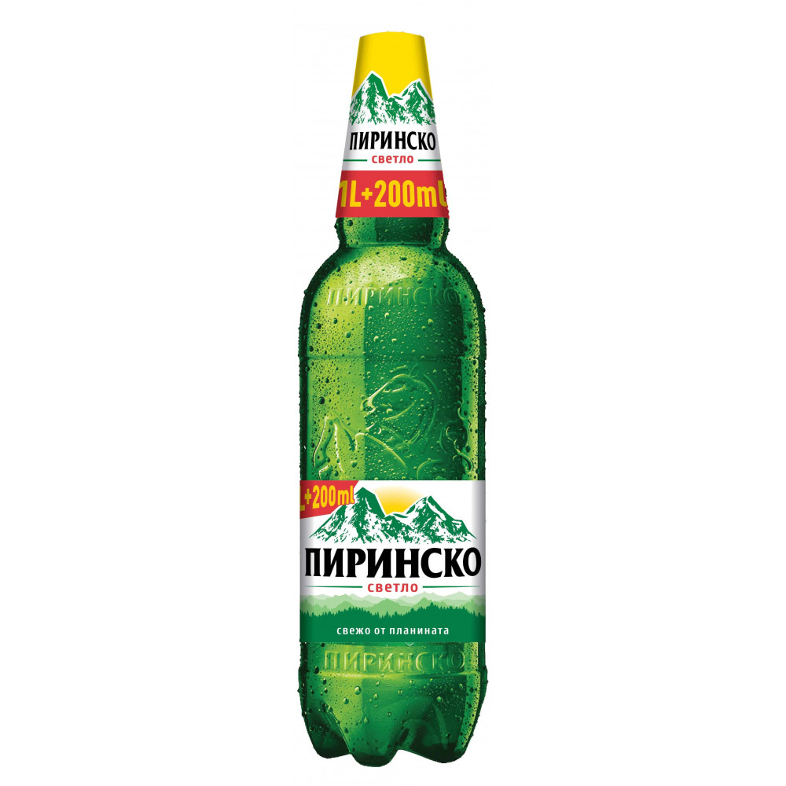

Ариана- 0.5 ml, 1L , 2L
„Ариана“ – светла бира с екстрактно съдържание 10° P и алкохолно съдържание 4,5 % об.
„Ариана Тъмно“ – тъмна бира с екстрактно съдържание 13° P и алкохолно съдържание 5,5 % об.
Болярка - 0.5ml,1L,2L
„Болярка светло“ – светла бира. Състав: вода, малц, хмел. Екстрактно съдържание: 10° Р, Алкохолно съдържание. 4,3% oб
„Болярка тъмно“ – тъмна бира. Състав: вода, малц, малцови продукти внос от Германия и хмел. Екстрактно съдържание: 11,7° Р. Алкохолно съдържание. 5,0% Об.
Пиринско - 0.5ml,1L,2L
„Пиринско светло“ – светла бира с екстрактно съдържание 10 P и алкохолно съдържание 4,3 % об.
„Пиринско Радлер “ – радлер – микс от 40 % светла бира и 60 % лимонова напитка. Предлага се на пазара в стъклени бутилки от 0,5 л., кенове от 0,5 л., както и в PET бутилки от 1,2 л.
sudurjanie na paragraf 3.